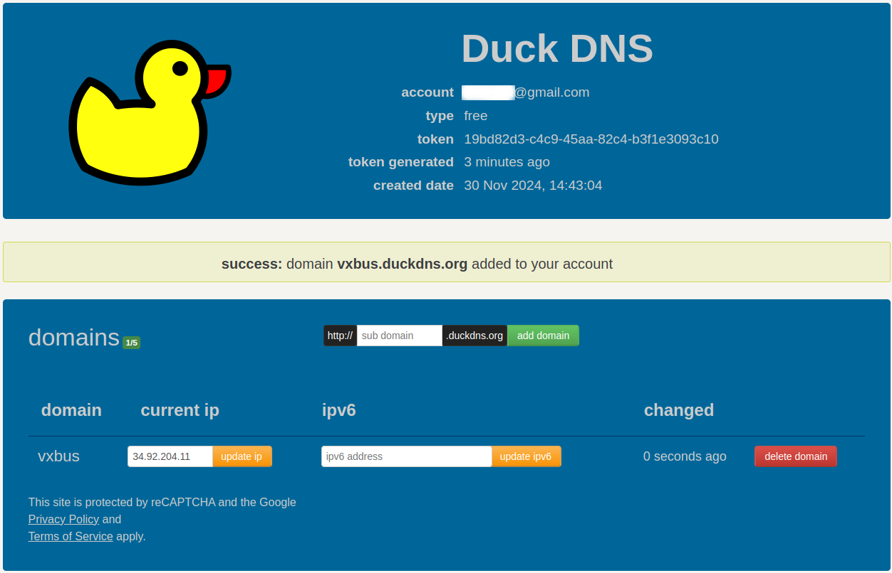

在互联网的世界中，域名和 IP 地址是我们访问网站和服务的重要桥梁。动态 DNS（Dynamic Domain Name System）是一种技术，它解决了动态 IP 地址带来的域名解析问题。通过动态 DNS，用户可以在动态 IP 地址频繁变化的情况下，仍然保持域名与设备的正常关联，从而方便访问和管理网络资源。
本文将深入探讨动态 DNS 的概念、工作原理及其应用场景，并详细介绍一些免费的动态 DNS 提供商，帮助读者更好地理解这一技术及其优势。
什么是动态 DNS #
动态 DNS（Dynamic Domain Name System）是一种自动化的域名解析技术，用于解决动态 IP 地址带来的域名解析问题。它的主要作用是在设备的 IP 地址频繁变化时，动态更新域名与 IP 地址之间的映射关系，使得域名始终能够正确解析到设备，无需手动干预。
举个例子，当你在家中搭建了一台服务器，并希望通过一个域名（如 www.vxworks.net）访问它时，如果你的网络服务提供商分配的 IP 地址是动态的，这意味着你的公网 IP 会不定时发生变化。这种情况下，普通的 DNS 无法自动更新映射记录，而动态 DNS 则能够实时更新，使你始终可以通过域名访问你的服务器。
动态 IP 地址与静态 IP 地址 #
在理解动态 DNS 之前，首先需要了解动态 IP 地址和静态 IP 地址的区别：
- 动态 IP 地址
动态 IP 是通过 DHCP（动态主机配置协议）由网络服务提供商（ISP）分配的临时 IP 地址。大多数家庭和中小型企业用户的网络连接使用动态 IP，因为这种方式可以更高效地利用有限的 IPv4 地址资源。
动态 IP 地址的特点包括：
- 成本低：无需为每台设备分配固定地址，降低了运营成本。
- 变化频繁：每次重启路由器或网络连接断开重连时，IP 地址可能会改变。
- 静态 IP 地址
静态 IP 是固定分配给设备的 IP 地址，不会随时间或网络重连而更改。它适用于需要稳定访问的场景，例如托管网站、远程桌面连接或运行邮件服务器。
特点包括：
- 稳定性强：地址固定，易于管理。
- 费用较高：通常需要额外支付给 ISP。
| 特性 | 动态 DNS | 静态 IP |
|---|---|---|
| 成本 | 通常免费或低成本 | 需要支付额外费用 |
| 灵活性 | 高，适用于动态网络环境 | 低，适用于固定网络环境 |
| 配置复杂度 | 较低，依赖客户端和提供商服务 | 较高，需 ISP 配置支持 |
| 更新频率 | 实时或几分钟内完成 | 无需更新 |
| 适用场景 | 小型网络、家庭用户、动态 IP 环境 | 大型企业、需要长期稳定的服务 |
通过对比可以看出，动态 DNS 适合预算有限、IP 地址变化频繁的用户，而静态 IP 则更适合对稳定性和可控性要求较高的场景。
为什么需要动态 DNS #
动态 IP 的频繁变化可能会导致一些实际问题：
- 无法通过域名访问设备
当 IP 地址改变后，原本映射的域名（如 myserver.example.com）无法解析到新的 IP，导致域名失效。
- 增加了管理复杂性
如果没有动态 DNS，用户需要手动更新 DNS 记录，这既耗时又容易出错。
动态 DNS 通过自动化的方式，解决了上述问题，简化了网络资源的管理流程。
动态 DNS 的基本工作原理 #
动态 DNS 的运行机制可以分为以下几个关键步骤：
- 设备分配动态 IP 地址
当设备连接到互联网时，ISP 的 DHCP 服务器为设备分配一个动态公网 IP 地址。
- 动态 DNS 客户端检测 IP 地址
安装在设备或路由器上的动态 DNS 客户端软件会定期检测当前的公网 IP 地址。
- 更新动态 DNS 提供商的记录
当客户端检测到 IP 地址发生变化时，它会将新的 IP 地址通知动态 DNS 提供商的服务器，更新域名与新 IP 的对应关系。
- 用户通过域名访问设备
动态 DNS 服务器将更新后的记录传播到全网的 DNS 系统中，用户通过域名访问设备时会解析到最新的 IP 地址。
通过这一流程，动态 DNS 实现了设备动态 IP 地址与固定域名之间的无缝连接。
动态 DNS 的技术工作流程 #
动态 DNS 的实现依赖于客户端与服务端的协同工作，其完整流程可以分为以下几个步骤：

- 安装动态 DNS 客户端
动态 DNS 服务通常需要一个客户端程序，用于监控设备的公网 IP 地址。这些客户端软件可以运行在用户的路由器、服务器或个人电脑上，某些现代路由器甚至内置了动态 DNS 支持功能。
- 监控公网 IP 地址变化
动态 DNS 客户端会定期检查设备的公网 IP 地址。当网络重启或 ISP 更换了分配的 IP 地址时，客户端会捕捉到新的 IP 信息。
- 通知动态 DNS 提供商
当检测到公网 IP 地址发生变化时，动态 DNS 客户端会将新地址发送给动态 DNS 提供商的服务器。
- 传输过程通常通过 HTTPS 或特定协议（如 dyndns2 协议）进行，以确保安全性和快速更新。
- 用户需要在客户端中预先配置动态 DNS 提供商的账户信息（包括用户名、密码和域名）。
- 更新域名记录
动态 DNS 提供商的服务器接收到新的 IP 地址后，会更新 DNS 记录中的 A 记录（IPv4 地址）或 AAAA 记录（IPv6 地址），使域名指向最新的 IP。
- 传播 DNS 记录 更新后的 DNS 信息会通过 DNS 系统传播到全网 DNS 服务器。当用户尝试通过域名访问设备时，解析过程会指向最新的 IP 地址，从而实现动态 IP 地址的无缝连接。
动态 DNS 的优势 #
动态 DNS 在动态 IP 地址环境中具有诸多优势：
- 自动化更新
动态 DNS 省去了手动修改 DNS 记录的麻烦，所有更新过程均由客户端和服务器自动完成。
- 成本经济
使用动态 DNS，用户无需额外支付静态 IP 的费用，同时仍能享受静态 IP 的功能效果。
- 灵活性强
动态 DNS 不受 ISP 提供的 IP 地址类型限制，可以适配任何动态网络环境。
- 易于部署
动态 DNS 设置简单，适合家庭用户、中小企业和个人开发者等多种场景。
动态 DNS 的局限性 #
尽管动态 DNS 在许多场景中十分实用，但它也存在一些限制：
- 依赖第三方服务
用户需要依赖动态 DNS 提供商的服务，免费服务可能受到功能限制或广告干扰，而付费服务则需要额外开支。
- 更新延迟
动态 DNS 的更新过程并非实时，可能会有几秒到几分钟的延迟，这在对实时性要求较高的场景中可能产生问题。
- ISP 限制
部分 ISP 可能会阻止端口转发或限制动态 DNS 的使用（例如通过 CGNAT 分配共享 IP），这会影响动态 DNS 的正常功能。
- 安全隐患
如果动态 DNS 客户端或提供商的账户配置不当，可能会导致域名劫持等安全问题。
免费动态 DNS 提供商推荐 #
在动态 DNS 服务市场中，许多公司和组织提供免费的服务，帮助用户解决动态 IP 地址变更带来的困扰。虽然免费服务在功能和性能上可能有所限制，但对于普通家庭用户、小型企业或个人开发者来说，它们往往足够使用。接下来，我们将介绍几家常见且受欢迎的免费动态 DNS 提供商。
No-IP #
No-IP 是目前最受欢迎的动态 DNS 服务提供商之一，提供稳定且易于配置的免费动态 DNS 服务。它的免费版非常适合家庭用户和小型网络设备的使用。
https://www.noip.com/
特点：
- 免费账户：提供免费账户，每个账户最多支持 3 个主机名（如 yourname.no-ip.org）。
- 更新频率：需要每 30 天手动登录并确认账户活跃，否则会被禁用。
- 客户端支持：No-IP 提供了多平台的客户端，包括 Windows、Linux 和路由器内置的客户端支持。
- 功能限制：免费版有一些功能限制，如仅能使用提供的免费域名（不可自定义域名）。
优势：
- 提供稳定可靠的动态 DNS 服务。
- 适合家庭用户和小型企业使用，支持常见设备和应用。
- 支持多种客户端，配置简单。
缺点：
- 免费账户每 30 天需要手动验证一次。
- 只能使用 No-IP 提供的免费域名，无法自定义域名。
DuckDNS #
DuckDNS 是另一个受欢迎的免费动态 DNS 提供商，它完全免费且开源，支持用户使用自定义域名。
特点：
- 免费账户：提供免费服务，允许每个账户最多使用 5 个子域名（如 yourname.duckdns.org）。
- 自动更新：支持自动更新公网 IP 地址，用户可以配置其设备或路由器自动更新 DuckDNS 服务。
- 开源：DuckDNS 是一个完全开源的项目，用户可以查看其代码并参与社区贡献。
- 支持多平台：支持多种操作系统和设备，如 Windows、Linux、macOS，以及常见的路由器和物联网设备。
优势：
- 完全免费，且支持自定义域名。
- 无需手动验证，更新频繁且稳定。
- 支持自动更新，配置简单。
- 开源项目，用户可以自定义或修改代码。
缺点：
- 每个用户仅支持 5 个子域名，对于需要更多子域名的用户可能不够。
- 相比其他服务，DuckDNS 的功能相对简单，可能不适用于大型企业。
Dynu #
Dynu 提供免费和付费的动态 DNS 服务。免费版本已经具备了许多实用功能，适合个人用户和小型企业。
https://www.dynu.com/
特点：
- 免费账户：免费用户可以创建最多 1 个主机名，支持自定义域名（例如 yourname.dynu.com）。
- 客户端支持：Dynu 提供支持多种操作系统的客户端，包括 Windows、Linux、macOS，以及许多路由器。
- 更新频率：Dynu 支持定时更新功能，用户可以配置自动更新 IP 地址。
- 安全性：支持使用 SSL/TLS 加密连接，确保数据的安全传输。
优势：
- 免费版允许用户使用自定义域名。
- 支持多种客户端和操作系统。
- 安全性较高，支持加密连接。
缺点：
- 免费版仅支持 1 个主机名，功能较为简单。
- 仅支持少数功能，付费版提供更多高级功能。
FreeDNS #
FreeDNS 是一个免费的动态 DNS 提供商，支持自定义域名和多个子域名，适合对 DNS 服务有特殊需求的用户，提供非常灵活的功能，支持用户使用自己的域名，且不需要注册账户。
https://freedns.afraid.org/
特点：
- 免费账户：用户可以在没有注册账户的情况下使用免费服务。
- 自定义域名：支持用户将自己的域名绑定到动态 IP 地址。
- 多个域名支持：提供多个子域名供用户使用。
- 更新机制：支持通过 API 或客户端软件进行 IP 更新。
优势：
- 支持自定义域名，用户可以绑定自己的域名进行动态更新。
- 不需要注册账户即可使用免费服务。
- 允许用户使用多个子域名。
缺点：
- 服务可能存在稳定性问题，偶尔出现服务中断。
- 配置稍显复杂，适合有一定技术背景的用户。
其他免费动态 DNS 提供商 #
除了上述几家服务提供商外，还有一些其他的免费动态 DNS 服务，适合不同需求的用户。例如：
- DNS-O-Matic：提供简单易用的动态 DNS 更新工具，适合多个 DNS 提供商的用户同时更新。
- ChangeIP：提供免费的基本版动态 DNS 服务，支持多达 5 个主机名。
https://www.changeip.com/
- DynDNS.it：提供免费的动态 DNS 服务，支持用户自定义域名和多个子域名。
https://dyndns.it/
以上是几家较为流行的免费动态 DNS 提供商。每家服务都有其优缺点，适合不同类型的用户和应用场景。例如，No-IP 和 Dynu 适合家庭用户和小型企业，DuckDNS 适合开发者和开源爱好者，FreeDNS 和 Afraid.org 则更适合对自定义域名有需求的用户。用户在选择免费动态 DNS 服务时，应根据自身的需求、预算以及技术能力来进行选择。
如何配置动态 DNS #
在了解了什么是动态 DNS 以及一些常见的免费动态 DNS 提供商后，接下来我们将详细介绍如何配置动态 DNS。无论是家庭用户、企业用户，还是开发者，都可以通过以下步骤配置动态 DNS 服务来应对 IP 地址频繁变更的挑战。
配置动态 DNS 的基本步骤 #
配置动态 DNS 的过程相对简单，通常分为以下几个步骤：
- 选择并注册一个动态 DNS 提供商
首先，用户需要选择一个动态 DNS 提供商并注册账户。根据个人需求，可以选择免费或付费的服务。例如，No-IP、DuckDNS、Dynu 等提供了免费的动态 DNS 服务。
- 创建动态 DNS 主机名
注册完成后，用户需要在动态 DNS 服务商的控制面板中创建一个主机名（例如 yourname.dynu.com）。如果选择免费服务，可能会受到一定的限制（例如最多支持 3 个主机名或必须使用提供商提供的域名）。
- 下载并安装动态 DNS 更新客户端
许多动态 DNS 提供商都会提供更新客户端软件，帮助用户自动检测和更新其公网 IP 地址。下载并安装适用于自己操作系统的客户端软件（如 Windows、Linux、macOS）。一些动态 DNS 服务还支持通过路由器内置的功能来自动更新 IP 地址。
- 配置路由器或设备的 DDNS 设置
如果使用的动态 DNS 提供商支持路由器或设备的直接配置，用户可以直接在路由器或设备的管理界面中进行 DDNS 配置。大多数现代路由器（如 TP-Link、Linksys、Asus 等）都内置了动态 DNS 配置功能。用户只需要输入动态 DNS 服务提供商的相关信息（如提供的主机名、账户信息等），路由器即可自动完成 IP 地址的更新。
- 配置更新频率和时间间隔
大多数动态 DNS 服务允许用户设置 IP 地址更新的频率。一般情况下，动态 IP 地址的变化频率较低，因此用户可以设置较长的更新时间间隔（如 30 分钟或 1 小时）。如果 IP 地址变化较频繁，用户可以设置较短的更新间隔。
- 验证配置
配置完成后，用户可以通过访问自己的动态 DNS 主机名（如 yourname.dynu.com）来检查动态 DNS 是否工作正常。如果一切配置正确，用户将能访问到其设备或服务器，无论其公网 IP 地址如何变动。
在路由器中配置动态 DNS #
许多现代路由器提供了内置的动态 DNS 支持，允许用户直接在路由器设置中配置动态 DNS 服务。通过这种方式，所有通过路由器连接的设备都可以使用动态 DNS，而无需单独为每个设备配置。
以 TP-Link 路由器 为例，以下是配置动态 DNS 的步骤：
- 登录到路由器的管理界面（一般是 http://192.168.0.1 或 http://192.168.1.1）。
- 在路由器设置中找到 “动态 DNS” 或 “DDNS” 设置选项，通常可以在 “网络” 或 “高级设置” 中找到。
- 选择支持的动态 DNS 提供商（如 No-IP、DynDNS、DuckDNS 等）。
- 输入在动态 DNS 提供商注册的账户信息，包括用户名、密码和主机名。
- 保存设置后，路由器将自动定期更新其公网 IP 地址，并确保动态 DNS 记录始终指向正确的 IP 地址。
注意：并非所有路由器都内置动态 DNS 支持，某些旧型号的路由器可能需要额外安装第三方固件（如 DD-WRT 或 OpenWRT）才能启用该功能。
使用动态 DNS 更新客户端 #
如果路由器不支持内置的动态 DNS 更新功能，或者用户希望对动态 DNS 更新过程进行更精细的控制，可以使用动态 DNS 提供商提供的更新客户端软件。
以下是使用 No-IP 更新客户端的步骤：
- 访问 No-IP 官方网站，下载适用于自己操作系统的客户端（如 Windows、Linux、macOS）。
- 安装并运行客户端软件，登录到 No-IP 账户。
- 配置客户端，选择需要更新的主机名（如 yourname.no-ip.org）。
- 设置自动启动选项，以便在计算机启动时自动运行客户端并进行 IP 地址更新。
- 启动客户端，客户端将自动检测公网 IP 地址的变化，并将其更新到 No-IP 服务器上。
其他动态 DNS 提供商（如 DuckDNS 和 Dynu）也提供类似的客户端更新工具，用户可以根据需要选择合适的软件进行安装和配置。
使用 API 进行自动更新 #
一些动态 DNS 服务提供了 API 接口，用户可以利用 API 进行自动更新，适合有一定编程能力的用户。通过调用动态 DNS 提供商的 API，用户可以编写脚本来检测和更新公网 IP 地址。
以 DuckDNS 为例，用户可以通过以下步骤使用 API 进行更新：
-
注册并登录 DuckDNS，创建一个子域名（例如 vxbus.duckdns.org）。
-
获取 API 密钥，这通常在 DuckDNS 控制面板中可以找到。
 -
编写一个简单的脚本，通过 HTTP 请求自动更新 IP 地址。例如，使用 curl 命令来更新 IP 地址：
curl "https://www.duckdns.org/update?domains=yourname&token=your_token&ip="
这个脚本将定期检查并更新 IP 地址。
- 将脚本添加到定时任务中，确保定期执行。例如，在 Linux 上，可以使用 cron 来定期执行更新脚本。
常见问题和故障排查 #
在配置动态 DNS 时，可能会遇到一些常见的问题。以下是一些可能的故障及其排查方法：
- 无法访问主机名：检查动态 DNS 提供商的状态，确认是否有服务中断。确保动态 DNS 客户端或路由器的配置正确，并且 IP 地址更新正常。
- IP 地址更新失败：确认设备是否正确连接到网络。检查动态 DNS 提供商的账户是否过期或被禁用。确保路由器或客户端软件能够正常检测到公网 IP 地址的变化。
- 更新间隔设置不正确：如果 IP 地址频繁变更，确保更新间隔设置得足够短。对于家庭用户，通常可以设置 30 分钟到 1 小时的更新时间间隔。
写在最后 #
动态 DNS 配置过程相对简单，并且可以通过多种方式实现，包括在路由器中配置、使用客户端软件更新，或者通过 API 自动更新。选择合适的动态 DNS 提供商和配置方法可以大大简化网络管理，确保即使在 IP 地址变化时，用户依然能够通过稳定的域名访问设备或服务。对于大多数家庭用户、小型企业和开发者而言，动态 DNS 提供了一种便捷的解决方案，以应对公网 IP 地址变动带来的不便。